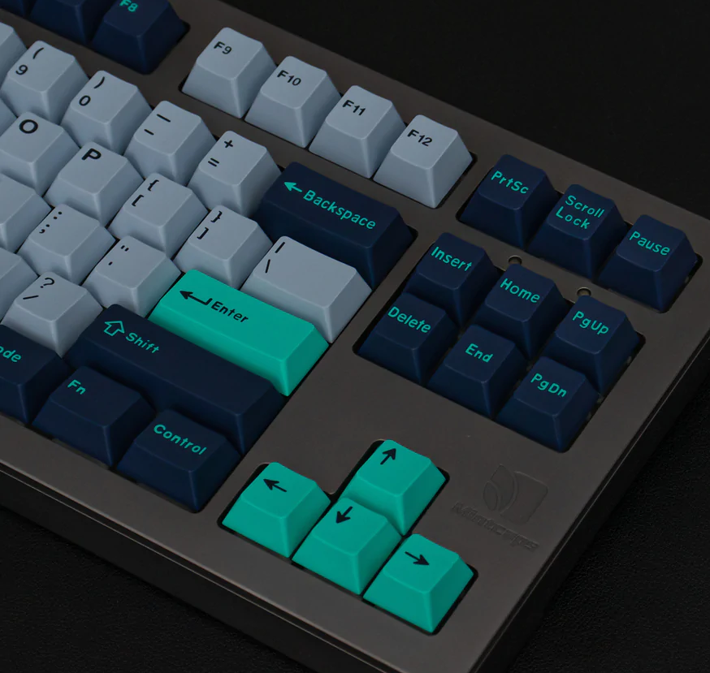

Frequently Asked Questions
Mechanical keyboards can be a hard hobby to get into. It is often very intimidating and overwhelming. This is why I have included this page, full of questions you may have, and the answers to them!
There is plenty of information to take in on this page, so don't be afraid to come back a few times to understand it all.
I have also included some more specific information about my services, and the parts you will need to decide on if you decide to order a custom keyboard from me.
